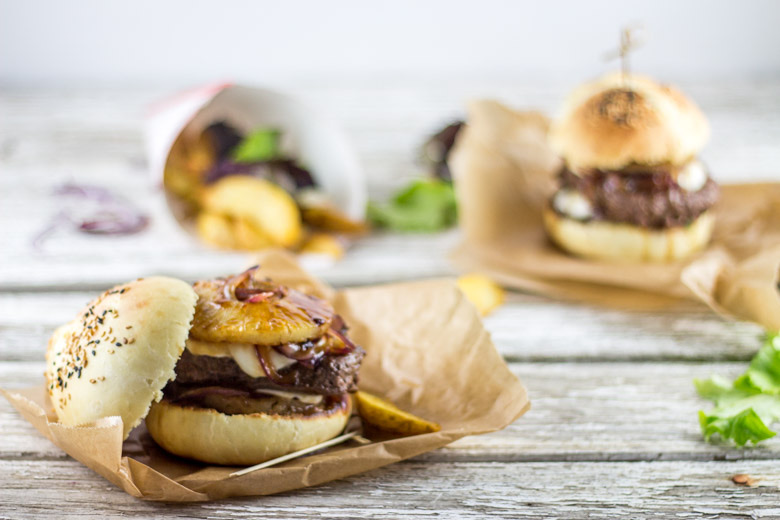
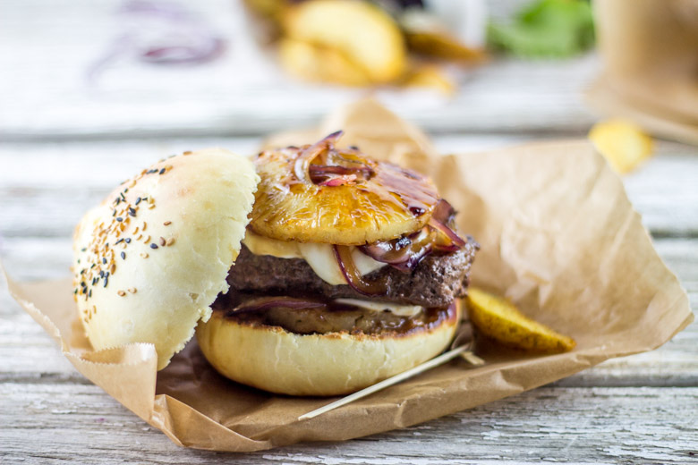

Teriyaki burger

Street food! Oui vous avez bien entendu (ou lu serait plus juste) et pour illustrer ce thème je vous propose un teriyaki burger!
Il s’agit ici de ma recette pour la bataille food#21 et attention pas n’importe laquelle car j’ai eu l’immense honneur d’être désignée comme marraine par Lyne d’Epices et moi!
La bataille food est un défi culinaire lancé par la superbe Jenna du Bistro de Jenna qui réunit blogueurs et non-blogueurs autour d’un thème commun très gourmand! L’objectif étant de se faire plaisir, d’inventer et de partager de merveilleuses recettes. Ce fut une très grande surprise mais surtout une immense joie pour moi d’être désignée comme marraine car comme vous le savez je suis adepte de ce genre de petits défis culinaires!
J’ai pendant longtemps hésité sur le choix du thème et finalement j’ai opté pour quelque chose que j’aime par dessus tout, de simple et qui se cuisine aussi bien pour des recettes salées que sucrées! J’ai en effet choisi «la STREET FOOD »! Ravie de constater que je ne suis pas la seule à adorer ça, cette bataille promet de très belles choses! <3 J’ai hâte de découvrir les participations des uns et des autres et je vous donne rendez vous sur mon compte pinterest pour un tableau regroupant toutes les gourmandises de cette édition en fin de soirée (j’espère!)!
Pour ma part, j’ai choisi de réaliser un teriyaki burger qui n’est autre qu’un burger sucré salé. J’étais un peu sceptique au départ car j’avais peur que le sucré salé ne passe pas facilement dans un hamburger mais ce fut tout le contraire car nous nous sommes régalés! Vous trouverez dans ce teriyaki burger un peu d’ananas, de mozzarella, du boeuf avec le tout enrobé de sauce yakitori (je vous le conseille…vraiment)!
A titre d’information, la différence entre la sauce teriyaki et la sauce yakitori est le « mirin » que l’on trouve dans cette dernière. J’ai préféré utiliser la sauce yakitori qui est plus épaisse pour avoir une sauce qui enrobe mon ananas et mes oignons mais vous pouvez utiliser la sauce teriyaki ce sera pareil (presque 😉 )! Dans cette recette mes pains sont faits maison et je ne m’en lasse pas car ceux la sont vraiment très très moelleux, un peu briochés et c’est un régal à chaque fois! Si vous êtes tentés de réaliser vous-même vos buns rendez-vous ICI.
Ingrédients
- Oignon rouge - 2
- Steack haché de boeuf - 4
- Rondelle d'ananas - 8
- Sucre - 3càs
- Mozzarella - 125g
- Sauce Yakitori
Instructions
- A feu doux, faire revenir les oignons coupés en fines lamelles dans un peu d'huile d'olive
- Quand ils deviennent translucides, ajouter le sucre
- Une fois les oignons légèrement caramélisés, ajouter un peu de sauce yakitori pour les enrober et laisser cuire 1 à 2 minutes à feu doux
- Sortir du feu et réserver
- Dans cette même poêle, faire cuire les rondelles d'ananas (vous pouvez ajouter un peu de sauce)
- Quand elles commencent à être colorées, les sortir du feu
- Faire cuire les steaks avec de la sauce yakitori
- Couper les buns en deux
- Toaster chaque face
- Déposer un peu d'oignons caramélisés sur la base des buns
- Ajouter une rondelle d'ananas et une fine tranche de mozzarella
- Poser votre steak et recommencer en ajoutant successivement, mozzarella, oignons et ananas


Les tips de la communauté
Burger très apprécié pour l'association originale sucré-salé utilisant ananas et sauce teriyaki. Les commentaires louent la créativité et l'appétit que suscite cette version moins traditionnelle. Parfait pour les soirées ciné ou street food à la maison. L'association asiatique-américaine est vue comme innovante et réussie.
Astuces
- L'association sucré-salé avec l'ananas apporte une originalité très appréciée
- La sauce teriyaki donne une profondeur asiatique au burger classique
- Parfait pour les repas en famille ou soirées ciné
Variantes suggérées
- Varier les fruits (mangue, papaye) pour autre nuance sucré-salé
- Adapter la sauce teriyaki en intensité selon les préférences
Ajustements signalés
- que je fasse ta recette 🙂 mine de rien j’y pense a chaque recette que l’on publie il faut la faire , et donc la gouter pour la tester bien sur ; je comprend pourquoi mon mari me soutient autant dans mon projet de blog lol